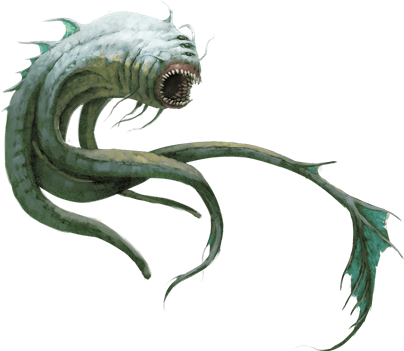
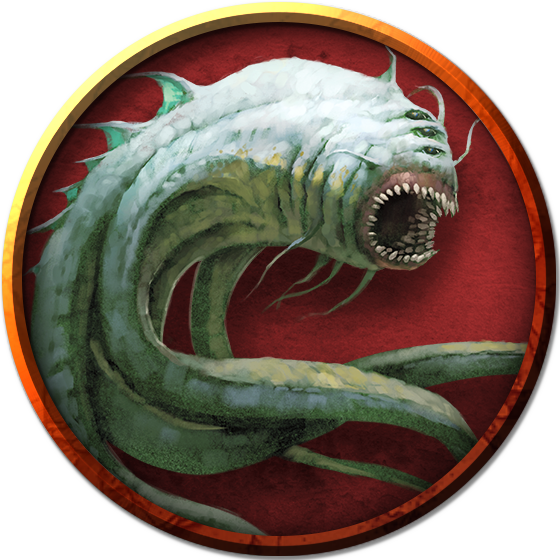

Aboleth
Before even the Eldar, aboleths lurked in primordial oceans and underground lakes. They reached out with their minds and seized control of the burgeoning life-forms of the mortal realm. Their dominance made them like gods. Then the Eldar appeared, smashing the aboleths' empire.

Aboleths have never forgotten.
Eternal Memories. Aboleths have flawless memories. They pass on their knowledge and experience from generation to generation. Thus, the injury of their defeat by the gods remains perfectly preserved in their minds.
Aboleths' minds are treasure troves of ancient lore, recalling moments from prehistory with perfect clarity. They plot patiently and intricately across eons. Few creatures can conceive of the extent of an aboleth's plan.
Gods in the Lake. Aboleths dwell in watery environments, including ocean abysses, deep lakes, and the Elemental Plane of Water. In these domains and the lands that adjoin them, aboleths are like gods, demanding worship and obedience from their subjects. When they consume other creatures, aboleths add the knowledge and experiences of their prey to their eternal memories.
Aboleths use their telepathic powers to read the minds of creatures and know their desires. An aboleth uses this knowledge to gain a creature's loyalty, promising to fulfill such wants in exchange for obedience. Within its lair, the aboleth can further use its powers to override senses, granting creatures, such as its followers, the illusion of promised rewards.
Enemies of the Gods. The aboleths' fall from power is written in stark clarity on their flawless memories, for aboleths never truly die. If an aboleth's body is destroyed, its spirit returns to the Elemental Plane of Water, where a new body coalesces for it over days or months.
Ultimately, aboleths dream of overthrowing the gods and regaining control of the world. Aboleths have had untold eons to plot and to prepare their plans for perfect execution.
Token

Aboleth
Large aberration, lawful evil
- Armor Class 17 (natural armor)
- Hit Points 135 (18d10 + 36)
- Speed 10 ft., swim 40 ft.
STR DEX CON INT WIS CHA 21 (+5) 9 (-1) 15 (+2) 18 (+4) 15 (+2) 18 (+4)
- Proficiency Bonus +4
- Saving Throws Con +6,Int +8,Wis +6
- Damage Vulnerabilities
- Damage Resistances
- Damage Immunities
- Condition Immunities
- Skills History +12,Perception +10
- Senses darkvision 120 ft.,passive Perception 20
- Languages Deep Speech,telepathy 120 ft.
- Challenge 10
Amphibious. The aboleth can breathe air and water.
Mucous Cloud. While underwater, the aboleth is surrounded by transformative mucus. A creature that touches the aboleth or that hits it with a melee attack while within 5 feet of it must make a DC 14 Constitution saving throw. On a failure, the creature is diseased for 1d4 hours. The diseased creature can breathe only underwater.
Probing Telepathy. If a creature communicates telepathically with the aboleth, the aboleth learns the creature's greatest desires if the aboleth can see the creature.
Actions
Multiattack. The aboleth makes three tentacle attacks.
Tentacle. Melee Weapon Attack: +9 to hit, reach 10 ft., one target. Hit: 12 (2d6 + 5) bludgeoning damage. If the target is a creature, it must succeed on a DC 14 Constitution saving throw or become diseased. The disease has no effect for 1 minute and can be removed by any magic that cures disease. After 1 minute, the diseased creature's skin becomes translucent and slimy, the creature can't regain hit points unless it is underwater, and the disease can be removed only by heal or another disease-curing spell of 6th level or higher. When the creature is outside a body of water, it takes 6 (1d12) acid damage every 10 minutes unless moisture is applied to the skin before 10 minutes have passed.
Tail. Melee Weapon Attack: +9 to hit, reach 10 ft. one target. Hit: 15 (3d6 + 5) bludgeoning damage.
Enslave (3/Day). The aboleth targets one creature it can see within 30 feet of it. The target must succeed on a DC 14 Wisdom saving throw or be magically charmed by the aboleth until the aboleth dies or until it is on a different plane of existence from the target. The charmed target is under the aboleth's control and can't take reactions, and the aboleth and the target can communicate telepathically with each other over any distance.
Whenever the charmed target takes damage, the target can repeat the saving throw. On a success, the effect ends. No more than once every 24 hours, the target can also repeat the saving throw when it is at least 1 mile away from the aboleth.
Legendary Actions
The aboleth can take 3 legendary actions, choosing from the options below. Only one legendary action option can be used at a time and only at the end of another creature's turn. The aboleth regains spent legendary actions at the start of its turn.
Detect. The aboleth makes a Wisdom (Perception) check.
Tail Swipe. The aboleth makes one tail attack.
Psychic Drain (Costs 2 Actions). One creature charmed by the aboleth takes 10 (3d6) psychic damage, and the aboleth regains hit points equal to the damage the creature takes.
An Aboleth's Lair
Aboleths lair in subterranean lakes or the rocky depths of the ocean, often surrounded by the ruins of an ancient, fallen aboleth city. An aboleth spends most of its existence underwater, surfacing occasionally to treat with visitors or worshipers.
Lair Actions
When fighting inside its lair, an aboleth can invoke the ambient magic to take lair actions. On initiative count 20 (losing initiative ties), the aboleth takes a lair action to cause one of the following effects:
- The aboleth casts phantasmal force (no components required) on any number of creatures it can see within 60 feet of it. While maintaining concentration on this effect, the aboleth can’t take other lair actions. If a target succeeds on the saving throw or if the effect ends for it, the target is immune to the aboleth’s phantasmal force lair action for the next 24 hours, although such a creature can choose to be affected.
- Pools of water within 90 feet of the aboleth surge outward in a grasping tide. Any creature on the ground within 20 feet of such a pool must succeed on a DC 14 Strength saving throw or be pulled up to 20 feet into the water and knocked prone. The aboleth can’t use this lair action again until it has used a different one.
- Water in the aboleth’s lair magically becomes a conduit for the creature’s rage. The aboleth can target any number of creatures it can see in such water within 90 feet of it. A target must succeed on a DC 14 Wisdom saving throw or take 7 (2d6) psychic damage. The aboleth can’t use this lair action again until it has used a different one.
Regional Effects
The region containing an aboleth's lair is warped by the creature's presence, which creates one or more of the following effects:
- Underground surfaces within 1 mile of the aboleth's lair are slimy and wet and are difficult terrain.
- Water sources within 1 mile of the lair are supernaturally fouled. Enemies of the aboleth that drink such water vomit it within minutes.
- As an action, the aboleth can create an illusory image of itself within 1 mile of the lair. The copy can appear at any location the aboleth has seen before or in any location a creature charmed by the aboleth can currently see. Once created, the image lasts for as long as the aboleth maintains concentration, as if concentrating on a spell. Although the image is intangible, it looks, sounds, and can move like the aboleth. The aboleth can sense, speak, and use telepathy from the image's position as if present at that position. If the image takes any damage, it disappears.
- If the aboleth dies, the first two effects fade over the course of 3d10 days.